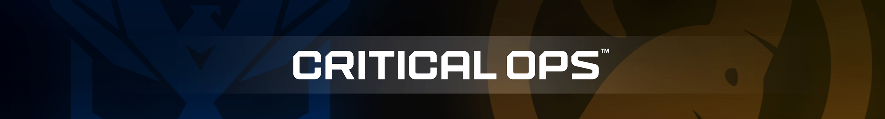
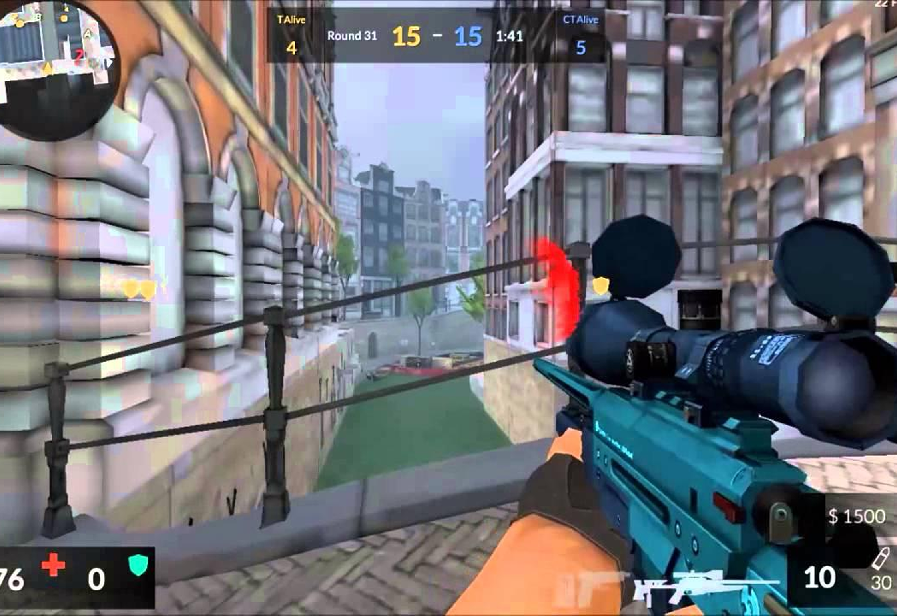
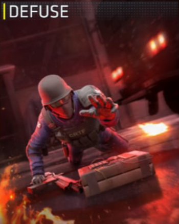
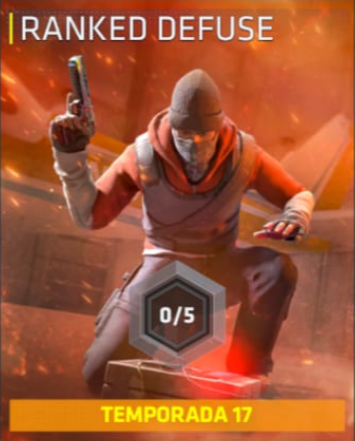
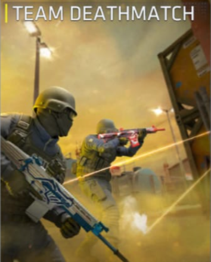
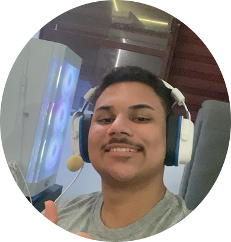
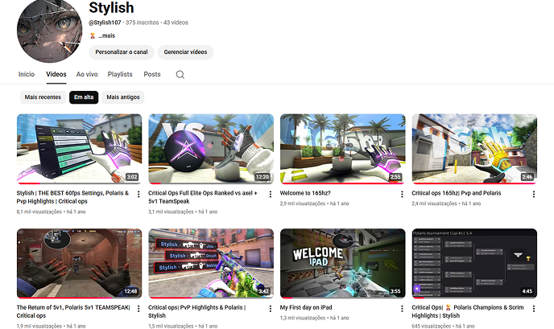

Critical Ops (comumente abreviado como C-OPS ) é um jogo de tiro tático em primeira pessoa desenvolvido pela Critical Force Entertainment e funciona como sequência e sucessor de Critical Strike Portable. Foi lançado inicialmente em 14 de agosto de 2015 na versão para navegador do Facebook, mas posteriormente migrou para o Facebook Gameroom em 30 de agosto de 2016. Foi lançado em 30 de setembro de 2015 para o Google Play.O lançamento oficial para a App Store foi realizado em versão beta para alguns países em 2 de maio de 2016.O jogo também foi lançado em 30 de junho de 2017 para a Amazon.
O Critical Ops nasceu com o intuito de retratar a essência do Counter-Strike nos dispositivos móveis, mas logo evoluiu para uma proposta única: tornar-se a experiência de FPS mais acessível e desafiadora do cenário mobile. Ao equilibrar controles intuitivos com uma jogabilidade que exige técnica apurada, ele se tornou a maior representação competitiva para smartphones. Mais do que um clone de PC, o jogo estabeleceu um ecossistema próprio de e-sports, onde a precisão tática e o reflexo rápido provam que o cenário mobile é tão sério e recompensador quanto qualquer outra plataforma.

Desarme ou proteja a bomba em partidas táticas 5v5. Comunicação e estratégia são a chave para a vitória.

Suba de patente enfrentando jogadores do seu nível. Mostre sua habilidade e conquiste o topo do competitivo.

Ação intensa sem parar. Elimine o máximo de inimigos e teste sua mira em combates rápidos.
Sabe aquele momento em que algo simples muda completamente sua rotina? Para mim, isso aconteceu aos 10 anos. Naquela época, meu mundo era o Minecraft Mobile (MCPE). Eu passava alguns momentos livres assistindo criadores como o yLexS2, mas um vídeo específico dele me apresentou algo novo: o Critical Ops. Não foi somente gráficos, foi ver que toda aquela galera que eu já admirava no Minecraft estava ali, jogando em equipe, criando estratégias e competindo. Quando baixei o jogo pela primeira vez, não imaginava que ele se tornaria uma parte tão grande da minha vida.


Eu me apaixonei pelo processo de melhorar. Cada treino, cada partida e cada nova amizade me moldaram como jogador. E foi nessa jornada que ganhei o nome que carrego com carinho: Stylish. O apelido veio do meu amigo Alvaro. Eu sempre tive um cuidado especial com as minhas skins e gostava de deixar tudo com a minha cara, com o meu estilo. Ele começou a me chamar assim e, de repente, eu não era mais só um jogador comum, eu era o Stylish.
Ao longo dos anos, o C-Ops deixou de ser apenas um passatempo. Construí uma história real ali: participei de campeonatos, postei meus primeiros vídeos e, principalmente, fiz amizades que o tempo não apaga. Este projeto que você vê aqui é o reflexo dessa trajetória. É onde guardo cada vitória, cada aprendizado e a memória daquela criança de 10 anos que só queria jogar com os amigos.
6x Polaris Champions
2x MVP Polaris Champions
World Critical Ops: Top 16 & Top 32
Pro League: Round 8 & Round 16
Circuit S2: Round 16
Circuit S3: ROUND 16
Circuit S4: Round 4